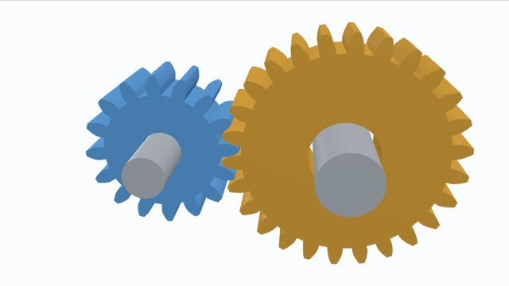
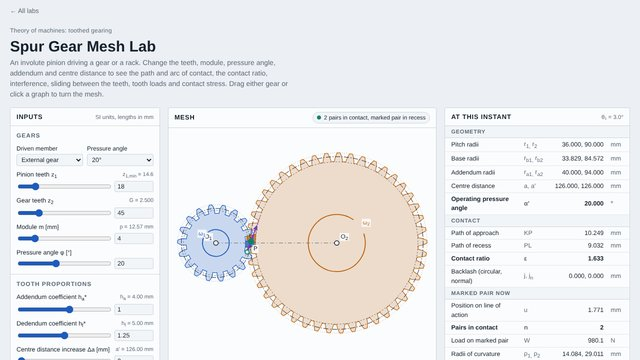
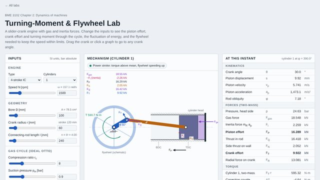
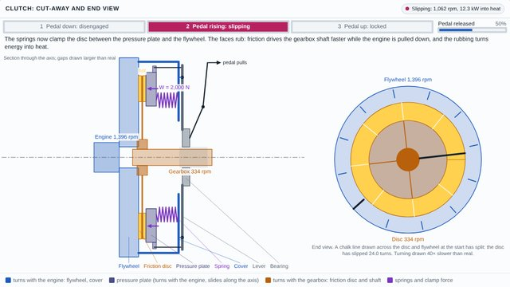
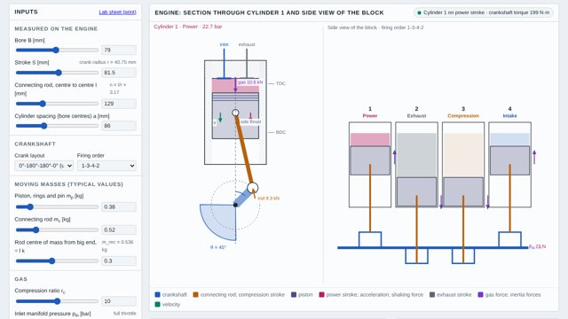
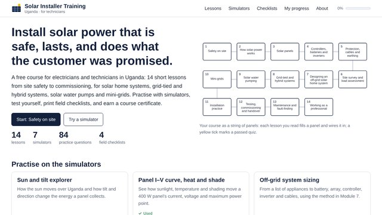
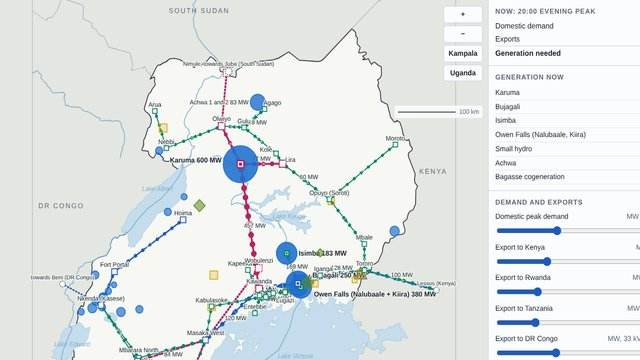

Mechanics Labs
Interactive models for class. Change the inputs, drag the mechanism, play the motion and scrub the graphs. Every result comes from the exact equations, which are listed at the bottom of each lab with references.
Labs

Slider-Crank Lab
Position, velocity and acceleration by loop closure. Velocity and acceleration polygons, rod obliquity, offset slider and quick return.
Open lab →
Quick Return Lab
Crank and slotted lever shaper mechanism. Time ratio, cutting and return strokes, and the Coriolis component of acceleration.
Open lab →
Mechanics of Machines, Chapters 1 to 7
The whole course as slide decks with 3D models, animations, live worked examples and self-checks: introduction, simple mechanisms, velocity and acceleration, belt drives, toothed gearing, cams and balancing.
Open notes →
Spur Gear Mesh Lab
Involute pinion with a gear or rack. Path and arc of contact, contact ratio, interference and minimum teeth, sliding, tooth load and contact stress.
Open lab →
Turning-Moment & Flywheel Lab
Gas and inertia forces in a slider-crank engine. Piston effort, crank effort, turning-moment diagrams, fluctuation of energy and flywheel rim design.
Open lab →
Friction Clutch Lab
Single- and multi-plate clutches. Torque capacity by uniform pressure and uniform wear, then the engagement itself: slip, heat, lock-up and stalling.
Open lab →
Four-Cylinder Engine Lab
Measure a real inline-four, then see piston motion, cylinder pressure, the turning moment diagram, the flywheel it needs and the forces and couples left unbalanced. Comes with a printable lab sheet and degree wheel.
Open lab →
Spring–Mass–Damper Lab
A mass hanging from a spring and dashpot. Free vibration in all damping cases, harmonic forcing, support motion, resonance, beats and isolation.
Open lab →
Tacoma Narrows Flutter Lab
Why the bridge failed by self-excited torsional flutter, not resonance. Run both explanations side by side and compare them with what was filmed.
Open lab →
Solar Installer Training
A full course for solar PV installers in Uganda: 14 lessons, seven simulators, quizzes, field checklists and a certificate. Opens in its own site.
Open course →
Uganda Electricity Atlas
Uganda’s power system for renewable energy and power systems units: load flow, frequency after a trip, blackout replays, new demand, losses, access and open data. Opens in its own site.
Open lab →Using a lab
- Move a slider or type a value; everything updates at once.
- Press Play to animate, or drag the crank directly.
- Click or drag on any graph to jump to that angle or time.
- Try the Presets to see one behaviour at a time.
Suggested exercises
- Check the worked-example values in the results table by hand.
- Find the crank angle of peak slider speed. Why isn't it 90°?
- Find the fewest pinion teeth that mesh with a rack at 14.5° and at 20° without interference.
- Size a flywheel for 1 % speed fluctuation, then see how much smaller it can be with four cylinders.
- Release a clutch over 0.1, 0.5 and 1.5 s. Which one heats the plates most, and which stalls the engine?
- Measure the logarithmic decrement from the x(t) graph and recover ζ.
- Find the wind speed at which the Tacoma deck becomes unstable.
Works on
Any modern browser on a laptop, tablet or phone. Nothing to install. The labs also work offline once a page has loaded.
A Python version of the slider-crank analysis is in python/slider_crank.py.